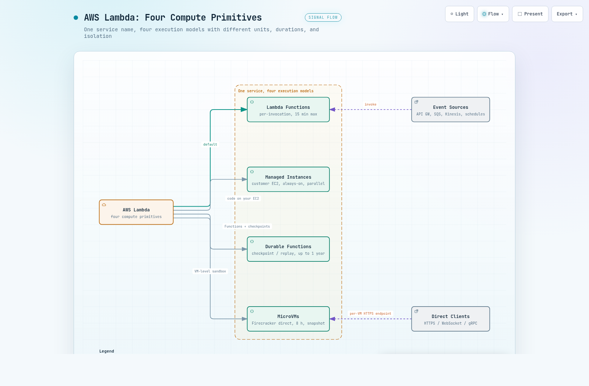

01실행 모델 4종 한눈에
2026년 8월 현재 Lambda라는 이름 아래에는 서로 다른 실행 모델 네 가지가 있습니다. 우리가 알던 호출당 실행 모델은 이제 그중 하나인 Lambda Functions이고, 나머지 셋은 실행 단위와 격리 수준 자체가 다릅니다. 이 섹션은 네 모델을 한 표로 비교하고, 어느 모델에서 시작할지 판단하는 분기를 제시합니다.
네 모델은 무엇이 얼마나 다를까요? 표 1은 실행 단위, 최대 지속 시간, 격리, 상태 유지, 주 용도 다섯 축으로 차이를 요약합니다. 최대 지속 시간만 봐도 15분에서 최대 1년까지 벌어집니다.
| 모델 | 실행 단위 | 최대 지속 | 격리 | 상태 유지 | 주 용도 |
|---|---|---|---|---|---|
| Lambda Functions (기본) | 호출(invocation) | 15분 | Firecracker microVM (관리형) | 보장 없음 (웜 재사용 시 /tmp, 전역 변수 유지) | 이벤트 기반 단발 처리 |
| Lambda Managed Instances | 고객 소유 EC2 인스턴스 | 인스턴스 상주 | 컨테이너 | 환경 상주 | 상시 활성, 병렬 처리 워크로드 |
| Lambda Durable Functions | durable execution | 최대 1년 | 기본 Lambda와 동일 | 체크포인트 | 다단계 워크플로, AI 오케스트레이션 |
| Lambda MicroVMs | MicroVM 인스턴스 | 8시간 | VM 수준 (Firecracker 직접) | 메모리, 디스크 스냅샷 | 사용자/AI 생성 코드 샌드박스 |
Lambda Functions는 우리가 알던 Lambda입니다. 이벤트가 도착하면 호출 단위로 실행되고, 호출 사이에는 실행 환경이 freeze(일시 정지)됩니다. 격리는 Firecracker가 담당하는데, Firecracker는 Lambda의 격리 계층을 맡아 온 경량 microVM 가상화 기술입니다. freeze된 환경이 다음 호출에 재사용되면 /tmp 디렉토리와 핸들러 밖 전역 변수 상태는 그대로 유지됩니다. DB 커넥션을 초기화 코드에서 만들어 재사용하는 최적화가 성립하는 이유가 이것인데, 실행 환경은 수 시간 주기로 교체되므로 호출 간 상태 유지를 보장으로 가정해서는 안 됩니다.
Lambda Managed Instances는 코드를 고객 소유 EC2 인스턴스에서 실행하고 Lambda는 운영만 담당합니다. 실행 환경이 freeze되지 않고 계속 활성 상태로 남으며, 한 환경 안에서 여러 호출이 동시에 실행됩니다. 상시 활성, 병렬 처리 워크로드가 대상이고 동작 차이는 섹션 02에서 자세히 다룹니다.
Lambda Durable Functions는 durable execution, 즉 체크포인트를 남기고 중단 지점부터 이어가는 실행 방식을 Lambda에 추가합니다. 체크포인트와 replay 메커니즘으로 하나의 실행이 최대 1년까지 이어집니다. 다단계 워크플로와 AI 오케스트레이션이 주 용도이며 섹션 03에서 다룹니다.
Lambda MicroVMs는 Firecracker를 프리미티브로 직접 노출합니다. 핸들러와 이벤트 모델이 아니라 MicroVM마다 부여되는 전용 HTTPS 엔드포인트에 직접 접속하는 방식이라 기존 Lambda와 사고방식 자체가 다릅니다. 사용자나 AI가 생성한 코드를 VM 수준으로 격리하는 샌드박스가 주 용도이며 섹션 04에서 다룹니다.
모델 선택의 출발점은 워크로드 성격입니다. 그림 1은 네 가지 대표 상황을 각 실행 모델로 잇는 분기를 보여줍니다.
네 모델이 완전히 배타적인 것은 아닙니다. AWS 문서는 Durable Functions를 checkpoint/replay 메커니즘을 쓰는 일반 Lambda 함수(regular Lambda functions)로 설명하므로, Durable Functions는 별도 인프라가 아니라 기본 Functions 위에서 동작하는 실행 모드에 해당합니다. 반면 Managed Instances나 MicroVMs와 Durable Functions의 조합 가능 여부는 작성 시점의 공식 문서에 언급이 없어 이 문서에서는 단정하지 않습니다.
02Lambda Managed Instances
Managed Instances는 코드를 고객 소유 EC2 인스턴스에서 실행하고 운영은 Lambda가 담당하는 모델입니다. 같은 함수 코드를 올려도 실행 환경의 동작이 기본 Lambda와 근본적으로 다릅니다. 이 섹션은 그 동작 차이와, 기존 함수를 그대로 옮길 때 걸리는 함정을 정리합니다.
2.1 freeze가 없고, 한 환경이 여러 호출을 동시에 처리합니다
기본 Lambda는 호출이 끝나면 실행 환경을 freeze하지만, Managed Instances의 실행 환경은 freeze 없이 계속 활성 상태로 남습니다. 호출 사이에도 실행 환경이 멈추지 않고 계속 동작한다는 뜻입니다.
호출 처리 방식도 다릅니다. 한 실행 환경 안에서 여러 호출이 런타임 워커별로 동시에 실행됩니다. 실행 환경 1개가 동시 호출 1건을 처리한다는 기본 Lambda의 등식이 여기서는 성립하지 않습니다.
기본 Lambda는 실행 환경 1개가 동시 호출 1건만 처리하고 환경 자체가 Firecracker microVM으로 격리되지만, Managed Instances에서는 동시 호출들이 같은 컨테이너의 프로세스 공간을 런타임 워커 단위로 나눠 씁니다. 전역 변수 오염, 스레드 안전성, 한 호출의 메모리 누수가 다른 호출로 번지는 문제가 마이그레이션 시 새로 검토해야 하는 항목이 됩니다. AWS 문서도 스레드 안전성, 상태 관리, 컨텍스트 격리를 이 실행 모델에서는 다르게 다뤄야 한다고 명시합니다.
타임아웃은 호출별로 독립 적용됩니다. 한 호출이 타임아웃되어도 같은 환경의 다른 호출은 영향 없이 계속 실행됩니다.
Managed Instances에서 호출이 타임아웃되면 Lambda는 호출자에게 에러를 반환하지만, 코드는 강제 종료되지 않고 백그라운드에서 계속 실행됩니다. 코드에서 context의 잔여 시간을 직접 확인해 중단하지 않으면, 이미 실패로 처리된 호출이 뒤늦게 완료되어 중복 쓰기나 중복 알림 같은 부작용을 만듭니다. 기본 Lambda 함수를 마이그레이션할 때 반드시 인지해야 하는 차이입니다.
2.2 backpressure와 컨테이너 폐기 정책
과부하 상황의 동작도 다릅니다. Managed Instances는 backpressure, 즉 처리 용량을 넘는 요청을 쌓아 두는 대신 앞단에서 거부하는 방식을 씁니다. 런타임 워커가 전부 바쁘면 신규 요청은 거부됩니다.
에러 처리 정책도 단순합니다. 실행 환경에 에러가 나면 Lambda는 리셋이나 복구를 시도하지 않고 컨테이너를 폐기한 뒤 새것으로 교체합니다. 실행 환경 안에 상태를 오래 쌓아 두는 설계라면 이 폐기 정책을 전제로 해야 합니다.
2.3 한도, 스케일링, 과금
기본 Lambda와 한도는 어떻게 다를까요? 초기화는 최대 15분까지 허용되고, 파일 디스크립터 한도는 4,096개로 기본 Lambda의 1,024개보다 큽니다. 실행 환경 OS는 Bottlerocket 기반입니다.
스케일링은 최소/최대 실행 환경 설정 안에서 리소스 사용 신호에 따라 자동으로 이루어집니다. 다만 자동 scale-to-zero는 없습니다. 트래픽이 없어도 설정된 최소 실행 환경(기본 3개)까지만 줄어듭니다. 최소와 최대를 모두 0으로 지정하면 함수가 비활성화되고 기반 인스턴스가 종료되는데, 이후 트래픽이 와도 자동으로 복귀하지 않으므로 0이 아닌 값으로 다시 설정해야 합니다. 2026-05-12부터는 Amazon EventBridge Scheduler로 일회성 또는 반복 일정을 정의해 용량 한도를 사전에 조정하는 스케줄 기반 스케일링이 추가되었습니다.
과금 구조도 기본 Lambda와 다릅니다. 요청 100만 건당 $0.20의 요청 요금에, 프로비저닝된 EC2 인스턴스 요금과 EC2 온디맨드 가격의 15%에 해당하는 관리 수수료가 더해집니다. 호출별 실행 시간 과금은 없는 대신, 표 1의 인스턴스 상주가 뜻하는 대로 트래픽이 없어도 인스턴스가 떠 있는 동안에는 계속 과금됩니다. EC2 Savings Plans와 예약 인스턴스 할인은 기반 EC2 요금에만 적용되고 관리 수수료에는 적용되지 않습니다.
03Lambda Durable Functions
Durable Functions는 실행 도중 체크포인트를 남기고, 중단되면 그 지점부터 이어가는 durable execution을 Lambda 함수 안에 구현한 모델입니다. 이 메커니즘 덕분에 하나의 실행이 15분이 아니라 최대 1년까지 이어집니다. 이 섹션은 두 프리미티브와 결정론 요구, Step Functions와의 선택 기준, 한도를 정리합니다.
3.1 step과 wait, 그리고 replay
개발자가 쓰는 프리미티브는 두 개입니다. step은 재시도와 진행 추적이 내장된 비즈니스 로직 단위이고, wait는 과금 없이 실행을 중단해 두는 대기입니다. 긴 승인 대기나 외부 이벤트 대기를 wait로 처리하면 그 시간에는 요금이 발생하지 않습니다.
실행이 재개되면 코드는 처음부터 다시 실행됩니다. 다만 이미 완료된 step은 저장된 체크포인트 결과로 건너뛰는데, 이 재실행 방식을 replay라고 부릅니다.
replay는 같은 코드를 다시 실행하면 같은 경로를 지나간다는 전제 위에 서 있습니다. 따라서 함수는 결정론적이어야 합니다. 실행할 때마다 값이 달라지는 로직이 섞이면 재개 시점의 실행 경로가 원래 실행과 달라질 수 있습니다.
SDK는 JavaScript, TypeScript, Python, Java 네 언어를 지원합니다. 워크플로를 별도 DSL이 아니라 이 언어들의 일반 코드로 그대로 쓴다는 점이 이 모델의 핵심입니다.
3.2 Step Functions와 어떻게 가를까
다단계 워크플로에는 이미 Step Functions가 있습니다. 언제 무엇을 쓸까요? 표 2는 두 선택지를 실행 위치, 정의 방식, 어울리는 상황으로 비교합니다.
| 기준 | Lambda Durable Functions | Step Functions |
|---|---|---|
| 실행 위치 | Lambda 함수 안 | 독립 서비스 |
| 워크플로 정의 | 일반 프로그래밍 언어 코드 | 그래프 DSL, 비주얼 디자이너 |
| 어울리는 경우 | 워크플로가 비즈니스 로직과 밀결합일 때 | 220개 이상 서비스 통합과 무보수 운영이 필요할 때 |
3.3 한도 - 상향 불가 항목이 설계 기준입니다
총량 한도부터 봅니다. 동시에 실행 중인 durable execution은 리전당 500만 건이고, 버지니아, 오레곤, 아일랜드 리전은 1,000만 건입니다. 실행당 durable operation은 3,000개, 실행당 영속 데이터는 100MB이며 이 두 한도는 상향 신청이 불가능합니다.
진입 속도에도 한도가 있습니다. durable execution을 시작하는 함수 호출 속도는 리전당 300 RPS이며 상향 요청은 가능합니다. 주문이나 결제처럼 요청 하나가 실행 하나를 시작하는 흐름이라면 리전당 500만 건보다 이 진입 상한에 먼저 걸립니다. 실행 이력을 조회하는 GetDurableExecutionHistory와 ListDurableExecutionsByFunction 같은 관측 API도 각 15 RPS라 대시보드 폴링 주기를 설계에 반영해야 합니다.
상향 불가 한도는 운영이 아니라 설계 단계의 제약입니다. durable operation 수가 3,000개에 다가가는 워크플로라면 실행 분할을 설계에서 고려해야 합니다.
04Lambda MicroVMs
MicroVMs는 Lambda의 격리 계층이던 Firecracker를 프리미티브로 직접 노출하는 모델입니다. AWS Compute Blog가 2026-07-10에 발표했고, 핸들러와 이벤트라는 기존 Lambda의 사고방식이 여기서는 적용되지 않습니다. MicroVM마다 전용 HTTPS 엔드포인트가 부여되고, 애플리케이션에 HTTPS, WebSocket, gRPC로 직접 접속합니다.
4.1 Dockerfile에서 스냅샷까지
배포 파이프라인은 Dockerfile에서 출발합니다. Dockerfile로 이미지를 정의하면 빌드, 앱 초기화, 스냅샷 생성까지 Lambda가 수행합니다. 실행 시에는 이 스냅샷에서 부팅하므로 의존성이 모두 로드된 상태로 즉시 시작됩니다.
실행 중인 MicroVM은 idle 정책에 따라 자동으로 suspend됩니다. suspend 동안에는 메모리와 디스크 상태가 보존된 채 스토리지 요금만 발생하고, 다시 필요해지면 자동으로 resume됩니다.
이미지에 포함된 값은 그 스냅샷에서 부팅하는 모든 MicroVM이 그대로 공유합니다. 고유 ID, 시크릿, 랜덤 시드는 이미지에 넣지 말고 MicroVM 시작 후에 생성해야 하며, 자격증명과 네트워크 연결도 시작 후에 재수립해야 합니다. 이 처리는 lifecycle hook에서 수행합니다.
4.2 리소스, 과금, 네트워크
리소스는 어디까지 쓸 수 있을까요? 기본은 메모리 2GB에 1vCPU이고, 베이스라인은 최대 8GB/4vCPU까지 설정할 수 있습니다. 부하가 오르면 베이스라인의 4배까지 자동 수직 확장되어 피크 기준 32GB/16vCPU에 이릅니다.
메모리와 vCPU 비율은 2:1로 고정이고 아키텍처는 ARM64입니다. 과금은 baseline-plus-consumption 방식입니다. 베이스라인 용량을 평균 사용량에 맞춰 두고, 이를 넘는 초과분은 실제로 사용할 때만 과금됩니다.
네트워크 연결은 방향에 따라 두 기능으로 나뉩니다. MicroVM에서 VPC로 나가는 아웃바운드는 Lambda Network Connector(LNC)라는 신규 리소스로 연결합니다. 반대로 VPC에서 MicroVM으로 들어오는 인바운드는 AWS PrivateLink를 지원해(2026-08-25 발표) MicroVM API 호출과 각 MicroVM의 HTTPS 엔드포인트 접속을 퍼블릭 인터넷 노출 없이 수행할 수 있습니다.
4.3 용도와 한도
주 용도는 사용자나 AI가 생성한 코드를 VM 수준으로 격리해 실행하는 샌드박스입니다. 브라우저 IDE, 노트북, AI 코딩 에이전트 샌드박스, 취약점 스캐너, CI/CD 격리 환경이 대표 사례이고, Claude Managed Agents의 self-hosted sandbox provider로도 사용할 수 있습니다.
한도는 지속 시간과 총량 양쪽에 있습니다. MicroVM 하나의 최대 지속 시간은 8시간입니다. 계정과 리전당 총 메모리는 400GB(버지니아, 오레곤, 오하이오, 도쿄는 1,024GB)에 4배 버스트가 가능하고, 이미지는 100개, 이미지당 버전은 50개까지입니다.
처리량 한도는 VM 단위와 API 단위 양쪽에 있습니다. VM당 동시 연결은 vCPU에 비례해 1vCPU 8개에서 16vCPU 128개까지이고, VM당 초당 요청은 4vCPU/8GB 구성에서 40건, 16vCPU/32GB 구성에서 160건입니다. 이 두 한도는 상향 신청이 불가능합니다.
API 속도 한도는 계정과 리전당 적용되며 상향 요청이 가능합니다. 기동(RunMicrovm)과 재개(ResumeMicrovm)는 각 5 TPS, 일시 정지(SuspendMicrovm)는 2 TPS입니다. 기동 5 TPS는 기본값 기준 분당 300개 수준이라, 분당 수백 개 규모의 샌드박스 기동까지는 기본 한도 안에서 가능합니다. 동시 이미지 빌드는 계정과 리전당 기본 5개(버지니아, 오레곤, 오하이오, 도쿄는 10개)입니다.
05기본 Lambda Functions의 설정 축
1층에서 실행 모델을 골랐다면, 2층은 기본 Lambda Functions 내부의 설정 축입니다. 같은 Functions 모델이라도 패키징, 호출 방식, 동시성, 리소스의 조합에 따라 동작과 한도가 달라집니다. 이 섹션은 그 축들을 quotas 문서의 수치와 함께 정리합니다.
5.1 패키징, 스토리지, 런타임, 아키텍처
코드를 어떤 형태로 만들어 무엇 위에서 실행할지 정하는 축부터 봅니다. 표 3은 네 축의 선택지와 한도를 요약합니다.
| 축 | 선택지 | 한도와 비고 |
|---|---|---|
| 패키징 - zip | zip 아카이브 업로드 | 압축 50MB(API/콘솔 직접 업로드), 압축 해제 250MB(레이어와 커스텀 런타임 포함). 초과 시 S3 경유 |
| 패키징 - 컨테이너 | 컨테이너 이미지 | 비압축 10GB, Amazon ECR에 저장 |
| 코드 스토리지 | Lambda 관리형 스토리지 | 리전당 300GB, 상향 불가. 초과가 예상되면 자체 관리 S3로 전환 |
| 런타임 | 관리형 5계열 + OS-only | Node.js, Python, Java, .NET, Ruby와 provided.al2023(커스텀 런타임용). Node.js 26과 Python 3.15는 퍼블릭 프리뷰 |
| 아키텍처 | x86_64 / arm64 | arm64는 Graviton2 프로세서. 지원 런타임 전체가 두 아키텍처를 모두 지원 |
퍼블릭 프리뷰 런타임에는 단서가 있습니다. Node.js 26과 Python 3.15는 Lambda SLA와 AWS 기술 지원 플랜의 보장 대상이 아니며, AWS는 프로덕션 워크로드에 사용해서는 안 된다(should not be used)고 명시합니다(2026-08-25 발표). 기술적으로 차단되는 것은 아니고 문서상의 지침입니다.
5.2 호출 방식 3종과 진입 지점 - 입구가 페이로드 한도를 정합니다
같은 함수라도 어떤 입구로 호출하느냐에 따라 페이로드 한도와 실패 처리 방식이 달라집니다. 층위를 나누면 호출 방식은 동기, 비동기, 이벤트 소스 매핑 세 가지이고, 응답 스트리밍은 그중 동기의 변형이며, Function URL이나 Lambda@Edge는 호출 방식이 아니라 진입 지점입니다.
- 동기(RequestResponse) - 호출자가 응답을 기다리는 방식입니다. 요청과 응답 페이로드는 각 6MB까지입니다. 실행 환경 인스턴스당 초당 10건까지 처리하므로 총 호출 상한은 동시성의 10배입니다. 동시성이 1,000이면 동기 호출 상한은 10,000 RPS입니다.
- 비동기(Event) - 페이로드는 1MB이고 Lambda가 기본 2회 재시도합니다. 최종 실패 시 이벤트를 DLQ(Dead Letter Queue) 또는 on-failure destination으로 보냅니다. 실행 환경당 요청 수 제한이 없어 총 상한은 함수가 쓸 수 있는 동시성에만 좌우되고, 동기의 10배 계산은 여기에 성립하지 않습니다.
- 이벤트 소스 매핑 - 이벤트 폴러(event poller)라는 Lambda 측 리소스가 소스를 폴링해 함수를 호출합니다. 작성 시점 문서 기준 지원 소스는 SQS, Kinesis, DynamoDB, MSK, Amazon MQ, self-managed Apache Kafka, Amazon DocumentDB 7종입니다.
응답 스트리밍은 별도 호출 방식이 아니라 동기 호출의 변형입니다. 응답을 최대 200MB까지 스트리밍하고, 첫 6MB는 대역폭 제한이 없으며 이후 2MBps로 제한됩니다.
Function URL, Lambda@Edge, API Gateway는 함수를 어디서 호출할지 정하는 진입 지점입니다. Function URL은 함수에 부여되는 전용 HTTP(S) 엔드포인트로, 퍼블릭 인터넷 전용이라 PrivateLink를 지원하지 않습니다. Lambda@Edge는 CloudFront와 함께 동작하고, API Gateway는 자체 스로틀을 앞단에 더합니다(섹션 06 참고). 어느 진입 지점이든 뒤에서는 위 호출 방식 중 하나로 함수에 도달하므로, 입구의 조합이 곧 페이로드 한도와 처리량 상한을 정합니다.
5.3 동시성 3종과 스케일링 속도
트래픽이 몰리면 함수는 얼마나 많이, 얼마나 빨리 늘어날 수 있을까요? 표 4는 동시성 3종과 스케일링 속도를 요약합니다.
| 항목 | 기본값과 한도 | 비고 |
|---|---|---|
| 온디맨드 동시성 | 리전당 기본 1,000 | 수만 단위까지 상향 요청 가능 |
| 예약 동시성 (reserved) | 계정 동시성에서 100을 뺀 값까지 | 특정 함수 전용 몫을 확보. 기본 계정 동시성 1,000 기준 최대 900이고, 계정 동시성을 상향하면 함께 커짐. 100 유닛은 항상 unreserved로 남음. 추가 요금 없음 |
| 프로비저닝드 동시성 (provisioned) | 동기 호출 한도 = 할당 동시성의 10배 | 10배 규칙은 동기 호출 한정. 온디맨드 함수의 동기 호출도 환경당 10 RPS로 동일. 비동기는 환경당 요청 수 무제한 |
| 스케일링 속도 | 10초당 실행 환경 1,000개 | 함수별로 적용 |
콜드 스타트를 줄이는 축으로는 SnapStart가 있습니다. 함수 버전을 게시할 때 초기화를 미리 수행해 실행 환경의 메모리와 디스크 상태를 Firecracker microVM 스냅샷으로 캡처해 두고, 첫 호출과 스케일업 시 그 스냅샷에서 재개(resume)하는 방식입니다. Java 11, Python 3.12, .NET 8 이상의 관리형 런타임만 지원하고, Java는 추가 비용이 없지만 Python과 .NET은 스냅샷 캐싱과 복원 요금이 발생합니다.
5.4 리소스 한도 - 메모리가 CPU와 대역폭을 정합니다
Lambda Functions에는 CPU를 따로 설정하는 항목이 없습니다. 메모리를 128MB에서 10,240MB까지 1MB 단위로 설정하면 CPU가 비례해 붙고, 1,769MB에서 vCPU 1개 상당이 됩니다. 타임아웃은 최대 900초이고, 임시 스토리지 /tmp는 512MB에서 10,240MB까지입니다.
네트워크 대역폭은 어디까지 늘어날까요? 기본은 625Mbps인데, VPC에 연결하지 않은 함수는 Service Quotas에서 "Network bandwidth per execution environment" 할당량 상향을 요청할 수 있습니다. 활성화되면 2GB에서 625Mbps를 시작으로 메모리에 비례해 늘어나 10,240MB에서 최대 3,000Mbps에 이릅니다(2026-08-05 발표).
5.5 네트워크, Layers, 권한, 기타 한도
네트워크 축은 VPC 연결 여부로 갈립니다. VPC 연결 함수는 ENI(Elastic Network Interface)를 사용하는데, ENI는 VPC당 500개이고 이 한도를 EFS 등 다른 서비스와 공유합니다. 앞서 본 MicroVMs가 LNC라는 별도 리소스로 VPC에 나가는 것과 달리 기본 함수는 ENI 방식입니다.
확장과 권한 축도 한도가 있습니다. Layers는 함수당 최대 5개이고 Extensions를 지원합니다. 리소스 기반 정책은 20KB이며, 2026-08-25부터는 단일 정책 문서에 여러 principal과 action을 담고 IAM condition key 전체를 쓸 수 있는 완전한 IAM 리소스 기반 정책이 지원됩니다.
나머지 한도는 숫자만 기억해 두면 됩니다. 환경 변수는 총 4KB, 파일 디스크립터와 프로세스/스레드는 각 1,024개입니다. 컨트롤 플레인 API는 합산 15 RPS이고, GetFunction(100 RPS)과 GetPolicy(15 RPS)는 별도 할당량입니다.
06선택 가이드와 운영 주의
마지막으로 지금까지의 내용을 선택 기준과 운영 주의사항으로 접어 봅니다. 선택의 출발점은 워크로드가 이벤트 단발인지, 상시 병렬인지, 장기 워크플로인지, 코드 샌드박스인지입니다. 표 5는 대표 상황별로 어느 모델에서 시작할지 정리합니다.
| 상황 | 선택 | 이유 |
|---|---|---|
| API 백엔드, 이벤트 기반 단발 처리 | Lambda Functions | 호출당 실행과 15분 한도로 충분한 대부분의 서버리스 워크로드 |
| 상시 활성 환경에서 여러 요청을 병렬 처리 | Managed Instances | freeze 없이 동시 호출 처리. 타임아웃 시 코드 미종료 함정 주의 |
| 승인 대기가 낀 장기 다단계 워크플로, AI 오케스트레이션 | Durable Functions | step/wait와 replay로 최대 1년. 워크플로가 비즈니스 로직과 밀결합일 때 |
| 220개 이상 서비스 통합, 무보수 운영이 우선 | Step Functions | 그래프 DSL과 비주얼 디자이너를 갖춘 독립 워크플로 서비스 |
| 사용자나 AI가 생성한 코드의 격리 실행 | MicroVMs | VM 수준 격리와 스냅샷 부팅, 최대 8시간 세션 |
API Gateway의 기본 스로틀은 10,000 RPS인데 Lambda의 기본 동시성은 리전당 1,000입니다. 기본값 그대로 조합하면 앞단이 뒷단보다 커서, 트래픽이 몰릴 때 API Gateway는 통과시키고 Lambda에서 스로틀링이 걸리는 병목이 생깁니다. 프로덕션 전에 Lambda 동시성 할당량을 예상 트래픽에 맞춰 상향해야 합니다.
할당량은 계정 상태에 따라서도 다릅니다. 신규 계정은 동시성과 메모리 할당량이 축소된 상태로 시작하고, 사용량이 늘어나면 AWS가 자동으로 상향합니다. 새 계정에서 부하 테스트가 예상보다 일찍 스로틀되면 이 축소 상태를 먼저 확인해야 합니다.
결론: 한 문장으로 요약하면, Lambda는 이제 단일 실행 모델이 아니라 Functions, Managed Instances, Durable Functions, MicroVMs 네 가지 컴퓨트 프리미티브의 묶음이며, 서버리스 설계의 첫 질문은 "메모리를 얼마로 잡을까"가 아니라 "어느 실행 모델에서 시작할까"로 바뀌었습니다.

--참고 자료
1차 출처
- Lambda quotas - AWS 공식 문서 (본문 한도 수치의 기준) https://docs.aws.amazon.com/lambda/latest/dg/gettingstarted-limits.html
- Lambda Managed Instances execution environment - AWS 공식 문서 https://docs.aws.amazon.com/lambda/latest/dg/lambda-managed-instances-execution-environment.html
- Lambda Durable Functions - AWS 공식 문서 https://docs.aws.amazon.com/lambda/latest/dg/durable-functions.html
- Announcing Lambda MicroVMs: serverless compute environments with VM-level isolation and near-instant startup - AWS Compute Blog (2026-07-10) https://aws.amazon.com/blogs/compute/announcing-lambda-microvms-serverless-compute-environments-with-vm-level-isolation-and-near-instant-startup/
What's New 발표 (본문 확인 완료)
- AWS Lambda functions now support full IAM resource-based policies - AWS What's New (2026-08-25) https://aws.amazon.com/about-aws/whats-new/2026/08/aws-lambda-full-iam-resource-based-policies/
- Node.js 26, Python 3.15 관리형 런타임 퍼블릭 프리뷰 - AWS What's New (2026-08-25) https://aws.amazon.com/about-aws/whats-new/2026/08/aws-lambda-node-js-python-public-preview/
- Lambda 네트워크 대역폭 상향 (VPC 미연결 함수, 최대 3,000Mbps) - AWS What's New (2026-08-05) https://aws.amazon.com/about-aws/whats-new/2026/08/aws-lambda-network-bandwidth/
- Lambda Managed Instances 스케줄 기반 스케일링 - AWS What's New (2026-05-12) https://aws.amazon.com/about-aws/whats-new/2026/05/aws-lambda-managed-instances/
- AWS Lambda MicroVMs now supports AWS PrivateLink - AWS What's New (2026-08-25) https://aws.amazon.com/about-aws/whats-new/2026/08/lambda-microvms-supports-privatelink